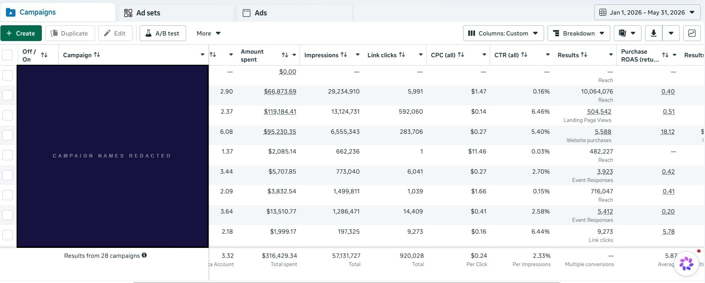

Brand identity withheld per client NDA. Campaign names redacted.
When we opened the account, the brief had been to test more creative. The account had no audience exclusions, outdated lookalike seeds, and prospecting and retargeting running into each other. Adding new ads into that structure wouldn't have changed the underlying problem.
This brand was doing roughly 3× ROAS before we took over. Every performance dip had been answered with more creative testing, and the account had never had a structural review. The pattern was clear: prospecting and retargeting overlapping with no exclusions, lookalikes seeded from visitors instead of purchasers, ads running for more than six months, and years of purchase history never connected to Meta. The opportunity wasn't creative. It was a cleaner acquisition system — stronger signals, tighter funnel boundaries, and a testing cadence that let the team make budget decisions from something other than one blended number.
Prospecting and retargeting were competing for the same people
No exclusions separated prospecting from retargeting. The same person could see a cold ad and a retargeting ad in the same week, with no way to separate which drove the sale. More spend would have amplified the overlap, not the results.
Lookalikes were modeled on visitors, not customers
Lookalikes were seeded from 30-day website visitors, not purchasers. The seed list captured everyone who landed on the site, including people who bounced immediately, not just people who completed a purchase.
Creative was being replaced only after performance declined
Some ads had been running for six-plus months with no rotation. No testing cadence, no threshold for promoting a winner, no exit criteria. New creative only entered the account after performance had already softened.
Years of purchase data were sitting unused
The brand's purchase history had never been connected to Meta. At their prior spend level, that was a significant gap. The account was learning from website activity while verified purchaser data sat unused.
If you recognized your account in those findings, a diagnostic session surfaces the same structural gaps and gives you a prioritized plan to address them.
Prospecting, consideration, and conversion were split into separate campaign groups with audience exclusions at each boundary. Each stage got a distinct role, budget, and baseline so we could see where efficiency was shifting and where more spend made sense.
We rebuilt the audience using the brand's highest-value customers as the source signal for prospecting, keeping the same campaign objective but starting from a much cleaner signal.
The brand's purchase history was activated across the account: to seed prospecting signals, suppress existing customers where appropriate, and support re-engagement. Years of unused data became part of the acquisition system.
A repeatable weekly cycle: new creative enters testing, winners get more budget, underperformers are retired against defined criteria. We refresh creative before fatigue shows up, not after performance has already dropped.
Prospecting and conversion were measured against their respective roles in the funnel. Budget decisions no longer depended on a single blended account number.
The account was running with no purchaser data connected and prospecting and retargeting overlapping. The signal feeding the algorithm was mixed. Separating the funnel stages and uploading verified purchase history gave the platform a more specific reference point. That's what we fixed first.
Each stage carries its own ROAS target. Prospecting and conversion are reported separately; no single blended number drives budget decisions.
The metrics are in the screenshot above. The more useful operational change was clarity. When the client wanted to increase spend, the decision no longer came down to one blended number. Prospecting and conversion could be evaluated separately, and the team could identify which stage was actually ready for more budget.
You leave with a prioritized plan for your account, yours to keep whether you work with us or not.